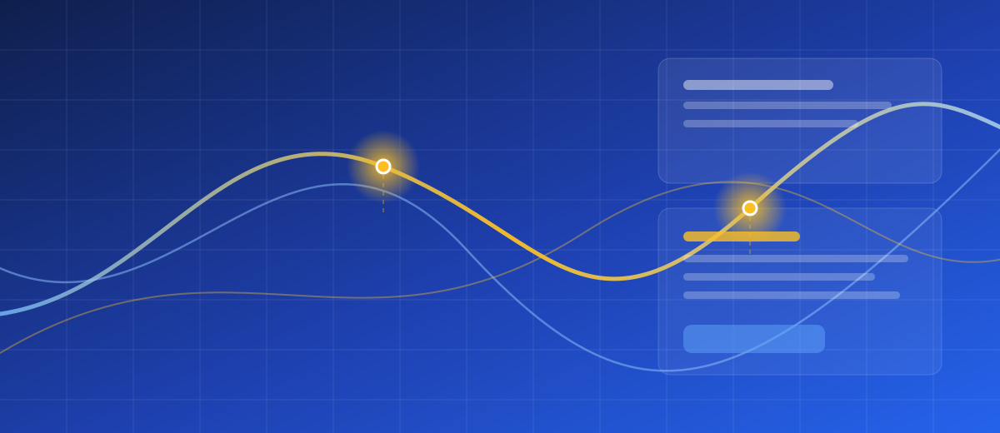

Номинация «Лучшая онлайн-разработка» в области математики и математического образования
MathVizor
Интерактивная образовательная платформа для развития математического моделирования и исследовательских компетенций обучающихся

Ключевые цифры проекта
- 4модуля платформы
- 86обучающихся в апробации
- +24 п.п.прирост верных заданий
- 9–11 / 1–2классы и курсы
Зачем нужен MathVizor
Традиционное занятие и большинство цифровых сервисов не обеспечивают пошаговую обратную связь и индивидуализацию: учебник даёт готовый результат, системы компьютерной алгебры выдают ответ без объяснения переходов, тесты фиксируют верность ответа, но не выявляют характер ошибки.
Подробнее о педагогическом дизайне →Как это работает
- Визуализация объекта
- Формулировка гипотезы
- Символьная проверка
- Рефлексия и вывод
Результаты апробации

Кто реализовал
ФГБОУ ВО «Мордовский государственный педагогический университет имени М. Е. Евсевьева», физико-математический факультет.
Автор: Асманкин И. М. Научный руководитель: Игушкина К. Н.